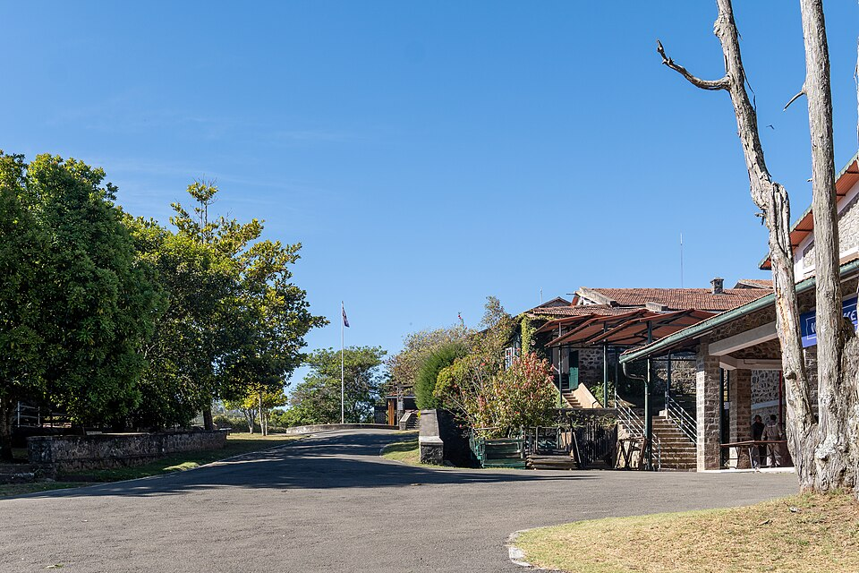

코다이카날 인터내셔널 스쿨 캠퍼스 · 사진: Rainer Halama / Wikimedia Commons, CC BY-SA 4.0
코다이카날 인터내셔널 스쿨(Kodaikanal International School, 인도) — 도시를 고르는 게 아니라 기숙을 고르는 학교
⚠️ 약칭 주의 — KIS는 저희 사이트에만 세 곳에 쓰입니다. 서울 개포·판교의 한국외국인학교(Korea International School), 방콕의 KIS 인터내셔널 스쿨, 그리고 이 글의 코다이카날 인터내셔널 스쿨입니다. 셋은 아무 관계가 없습니다. 검색하실 때 약칭만 쓰지 마시고 "코다이카날"을 반드시 함께 넣으세요.
1. 어떤 학교인가 — 1901년에 문을 연 산중 기숙학교
코다이카날 인터내셔널 스쿨은 1901년에 문을 연 것으로 알려진 남녀공학 학교입니다. 인도 남부 타밀나두주 코다이카날, 해발 2,100m 안팎의 팔라니 구릉 위에 있고, 가까운 큰 도시인 마두라이에서 북서쪽으로 약 120km 떨어져 있는 것으로 전해집니다. 출발은 선교사 가정 자녀들을 위한 작은 학교였던 것으로 소개됩니다.
지금은 기숙(보딩) 중심 캠퍼스에 통학생이 함께 다니는 형태로 운영되는 것으로 안내되고, 교육과정은 IB 한 줄로 이어집니다.
· 초등 — IB 초등 과정(PYP)
· 중등 — IB 중등 과정(MYP)
· 고등 — IB 디플로마(DP) 및 학교 자체 고교 졸업장
· 인증 — 미국의 중부주립학교협회(MSA) 인가, 인도대학협회(AIU) 인정으로 소개됩니다
※ 학생 수·학비·연도별 시험 결과처럼 해마다 달라지는 수치는 이 글에 적지 않았습니다. 받는 학년과 기숙 조건, 개설 과정은 바뀔 수 있으니 학교 요강을 직접 확인하세요.
2. 이 학교만의 이력 — 인도 IB의 출발점
이 학교를 다른 인도 학교와 가르는 것은 설립 연도가 아니라 IB를 언제 시작했는가입니다. 1974년에 인도에서 처음으로 IB 디플로마 과정을 도입한 학교로 전해지고, 1977년에 인도 최초의 IB 시험 응시생이 나온 것으로 소개됩니다. 중등 과정(MYP)과 초등 과정(PYP)은 그 뒤 2000년대에 더해진 것으로 알려져 있습니다.
이 이력이 가정에 주는 실질적인 의미는 두 가지입니다.
· ① IB가 "고등 2년에 얹은 것"이 아니라 학교 전체의 틀입니다. 초등부터 평가 방식이 기준표(루브릭) 중심이라, 아이가 중간에 들어와도 학교 안에서 잣대가 바뀌지 않습니다. 반대로 말하면, 한국식 문제풀이에 익숙한 아이는 들어오자마자 이 잣대에 적응해야 합니다. → 형성평가·총괄평가
· ② 졸업 서류가 두 갈래입니다. IB 디플로마 전 과정을 이수하는 길과, 학교 졸업 요건을 채우면서 필요한 과목만 IB로 듣는 길이 함께 안내됩니다. 뒤쪽이 "쉬운 길"이 아니라 스스로 설계할 것이 늘어나는 길이라는 점은 ISB 베이징 글에서 자세히 다뤘습니다.
3. 핵심 — 통학 학교와 기숙 학교는 "고르는 기준"이 다릅니다
주재원 가정에서 기숙학교를 처음 검토하실 때 가장 많이 하는 실수가, 통학 학교를 비교하던 기준을 그대로 들고 오는 것입니다. 두 가지는 따져야 할 항목 자체가 다릅니다.
| 항목 | 도시의 통학 국제학교 | 산중 기숙학교 |
|---|---|---|
| 학교를 정하는 조건 | 집과 회사의 위치 | 부모 거주지와 무관합니다 |
| 발령이 바뀌면 | 학교를 옮겨야 할 수 있습니다 | 학교는 그대로, 항공편만 바뀝니다 |
| 주말·짧은 방학 | 집에서 보냅니다 | 학교에 남을 수 있는지를 먼저 확인해야 합니다 |
| 이동 시간 | 매일 편도 30~60분 | 학기 시작·끝 공항에서 산길까지 반나절 |
| 학교와의 연락 | 과목 교사·어드바이저 | 여기에 기숙사 담당이 한 줄 더 생깁니다 |
| 아이가 흔들릴 때 | 저녁에 집에서 바로 보입니다 | 통화로만 알게 되므로 신호를 놓치기 쉽습니다 |
맨 아랫줄이 실제로 가장 중요합니다. 기숙은 생활이 정리된다는 큰 장점이 있지만, 부모가 아이의 공부 상태를 눈으로 보지 못합니다. 그래서 기숙을 택한 가정일수록 성적표와 플랫폼을 읽는 눈이 필요합니다. 어디서 무엇을 봐야 하는지는 성적표 읽는 법과 학습 플랫폼·시간표 읽는 법에 정리해 두었습니다. 연락 창구가 누구인지는 담임·어드바이저 글을 보시면 됩니다.
4. 한국 학생이 겪는 어려움 — 구간마다 다릅니다
| 구간 | 공부·평가 방식 | 한국 학생이 막히는 곳 |
|---|---|---|
| 초등 (PYP) | 탐구 단원 중심, 과정을 보고 평가 | 진도가 눈에 안 보여 기숙이면 더 늦게 알게 됩니다 |
| 중등 (MYP) | 기준표 채점 · 기한이 긴 과제 | 답은 맞았는데 점수가 낮은 상황에서 흔들립니다 |
| 고등 (DP·졸업 요건) | 2년 한 코스 · 과제와 외부 시험 | 기한 관리를 혼자 해야 하는 분량이 급증합니다 |
기숙 생활이 저녁 공부 시간을 정리해 준다는 것은 사실이지만, 그 시간에 무엇을 할지까지 정해 주지는 않습니다. 특히 MYP 구간에서 기준표 채점에 적응하지 못한 채 고등으로 올라가면, DP 2년에서 과제 기한에 밀리기 시작합니다. 기준표를 읽는 연습은 그룹 프로젝트·발표 평가, 과제 관리는 숙제·과제 관리에 적어 두었습니다.
5. 그래서 이렇게 준비합니다 — 그리고 인도라는 조건
· ① 기숙 조건을 먼저 묻습니다. 받는 학년, 올해 자리, 주말·짧은 방학 체류 가능 여부, 보호자 현지 연락처 지정 방식, 아플 때의 연락 순서. 다섯 가지면 충분합니다.
· ② 이동 일정을 1년 치로 적습니다. 학기 시작·끝, 긴 방학마다 공항에서 산길까지의 이동이 붙습니다. 항공권은 학사 일정이 확정된 뒤에 잡으세요. → 국제학교 학사 일정
· ③ 영어는 "쓰기"부터 손봅니다. IB는 전 구간에서 근거를 들어 설명하는 글을 요구합니다.
· ④ 수학은 용어와 서술을 함께 봅니다. 선행이 되어 있어도 영어 용어와 풀이 서술에서 깎입니다. → 입학 준비 총정리
· ⑤ 11학년 전에 목표 국가를 좁힙니다. 졸업 서류가 두 갈래라 어느 나라를 보느냐에 따라 과목 조합이 달라집니다.
📌 인도는 한국과 시차가 3시간 30분입니다. 기숙 학생의 경우 저녁 자습 시간대와 겹치지 않게 잡는 것이 관건이라, 수업 시간을 정하기 전에 기숙사 일과표를 먼저 받아 보셔야 합니다. 주말 오전이 가장 안정적인 경우가 많습니다. 기기·인터넷 사용 규칙도 기숙사마다 다르니 함께 확인하세요. → 노트북·태블릿(BYOD)
관련 검색어: 코다이카날국제학교 · 코다이카날인터내셔널스쿨 · 인도기숙국제학교 · 인도국제학교수학과외 · 인도국제학교영어과외
정리
코다이카날 인터내셔널 스쿨은 1901년에 문을 연 것으로 알려진 인도 남부의 산중 기숙학교이고, 1974년 인도에서 처음 IB 디플로마를 도입한 학교로 전해집니다. 지금은 초등·중등·디플로마가 IB 한 줄로 이어지고, 졸업 서류는 IB 디플로마와 학교 졸업장 두 갈래로 안내됩니다. 이 학교를 보실 때 비교 대상은 다른 도시의 통학 학교가 아니라 "기숙이라는 방식 자체"입니다. 생활이 정리되는 대신 부모가 공부 상태를 눈으로 못 봅니다. 그 공백을 메우는 방법이 성적표를 읽는 눈과 정기적인 점검입니다. 30분 무료 수업으로 지금 아이의 위치부터 확인해 보시기 바랍니다. (학년 구성·기숙 조건·과정 운영은 바뀔 수 있으니 반드시 학교 요강을 직접 확인하세요.)